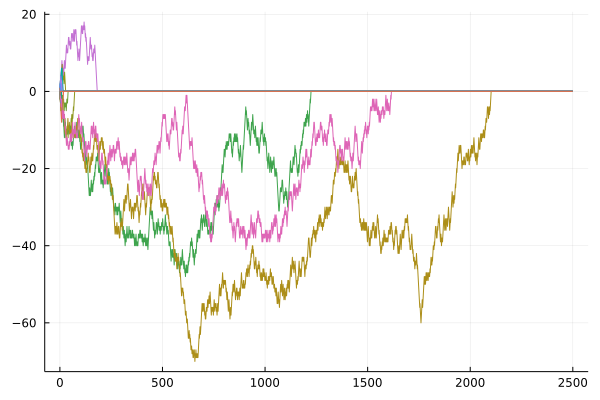

2021/10/08 23:31
2限は確率論．測度論やLebesgue積分を真面目に勉強していないので， 理解できるのか不安だが，のんびりと進みそうで少し安心した． 今日は初回だったので，イントロダクションとして確率論の歴史や， イメージしやすい例で確率論の必要性や有用性など． 円に内接する正三角形があって，適当に弦を引いたときに三角形の一辺より 長くなる確率を考える問題では， 初頭的に考えると何を同様に確からしいとみるかによって確率が 変わってしまったりするということがおこるなどが興味深かった． また，1, 2次元のランダムウォークは必ず出発点に戻ってくるが， 3次元ではそうでないといったことが非常に興味深かった．3次元は 問題が難しくなったり，例外的になりたたないことがあったりと 魔境だな，と． おもしろかったので，1次元ランダムウォークの数値実験もしてみた． コードはここ．
5限は量子力学Cでなぞの理解度チェック試験があった．あんなので， 理解度なんて図れそうにないが...． 量子力学Cは摂動論とか散乱理論とか．計算練習をたくさんしなければ．
2限と5限のあいだにFortranでHello World!して遊んでみた．Hello World したことがあるだけの言語が増えてくる...．
2021/10/07 23:51
木曜2限は物性物理．前期に引き続きおもしろそう． 計算機をつかって第一原理計算をするそうでとても楽しみ． 講義中にFermi-Dirac分布を温度によってプロットをJuliaでしようと していたが，for loop中でプロットすると上手く表示されない 問題で悩んでいたが， こんな感じ に解決した．もっといい方法があると教えてほしい．
3,4は実験だが，初回なのでガイダンス．これはおもしろそうじゃない．
そのあと，担当教員と面談をした．他の人は10分くらいで終わるに 私はいつも1時間くらい人生について語られている．ありがたいことだが， 私のメンタルをそれほど心配されているらしい． 学科の闇についてもいろいろ聞けてまあ良かった． 最近，計算機に興味があることを話したら，量子力学の計算とかやると 勉強になるんじゃない，とのこと．球ベッセルとか球ノイマンやってみよう と言われた．
2021/10/06 21:52
1限の線形代数Ⅲから幾何学特論，プログラミングの講義にでた．
線形代数はあまり得るものがなさそうな印象． 授業中に昨日の統計力学のplotをgnuplotで書いて gitsに上げた．gistいいな．
幾何学特論は，中トポの3, 4章のホモロジーやホモトピーの話を扱うらしく， 面白そうに思った．結び目とか組紐とかのはなしとかもチラッとでて， おっと思った．トポロジーのintroductionで有名な，ケーニヒスベルクの橋 を一回ずつとおることが不可能という問題だが， 現在のケーニヒスベルクの橋 はこんな感じに形や数が当時とは変わってしまい，可能になっていることが 面白かった．
プログラミングは技術的なこと中心かと思っていたが，今日はコンピュータの 仕組み的なことを聞けて，それはそれで面白かった．この講義では ここにある資料 をもとに出版したものを使うそう．講義ではcolabを使うみたいだが，私は好きでない．
2021/10/05 23:41
今日は統計力学と相対論の講義に出た． 統計力学は週に二回あるので，今日は二回目． 月火連続って頭悪くないか？
統計力学は，先生がライブでgnuplotでplotしたりしていた
ので，自分も追いかけようと思って
$ gnuplot
と打ったら
インストールされていなかったので，
Juliaでやってみた．
相対論は去年少し潜っていたので予想はしていたが， 退屈そうな感じだった． 教員は宇宙論の専門の方で， 講義後，相対論的熱力学について 質問したが，まさに研究でそれを使うらしい． phase spaceの分布関数が $$f(\vec{x}, \vec{p}) = \frac{1}{e^{-E/T}+1}$$ という形で，\(E=\vec{p}^2/2m\)の部分を相対論的に するらしい．これを（非平衡にしたものを）用いて， Dark matterの分布を調べているとか．
2021/10/04 23:59
数値解析学と統計力学の初回があったので，その感想を． 数値解析はあまり数学色は強くなくて，多少証明は するが，スキルを学べそうに思った． 非線形方程式の数値解法であるNewton法の 例示されたものを Juliaで実装してみた．
統計力学は，予想通り適当な感じだった． そういえば，先生が粒子5,6個くらいあれば，統計力学が適用できる と言っていたが，本当だろうか．
2021/10/04 01:00
今日は夏休み最後だったらしい．かなしい． 今日もかわらずのんびりと生活していた．明日から早起きできるだろうか．
グランドカノニカル分布の導出と，同時にカノニカル分布の復習をしていた． 統計力学は応用で分配関数の有用さを見てから，導出をやったほうが モチベーションがわくと思う． 導出での疑問だが，エネルギーの範囲の\(\delta\)は計算結果ででない というのは，もし出るとモデルの設定が悪いということだが， なにかそれ以上の理由はないのだろうか.
(2021/10/06) 上の疑問について このツイートで教えてもらった．
2021/10/01 00:28
先日作った日記を書くためのシェルスクリプトの 動作チェックをしたら，バグを発見したので修正していたら， 早く寝ようと思っていたのにこんな時間になってしまった．